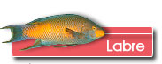
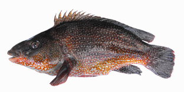

|
  |
||
 |
|
||
 Des palais broyeurs
Les fossiles retrouvés sont les palais de ces poissons qui sont assez caractéristiques. Le labre possède des dents coniques et pointues sur les mâchoires et un palais pharyngien broyeur capable d'écraser des coquilles. Ces palais sont constitués de petites dents juxtaposées placées sous l’os pharyngien.
Le labre se rencontre communément en Méditerranée et en Atlantique. Sur nos côtes, ces poissons sont appelés les vieilles. C’est peu respectueux mais en fin de compte assez approprié pour un poisson d’au moins 20 millions d’années !
Une famille nombreuse  Ce sont des prédateurs. Ils se nourrissent de coquillages et de crustacés. Ils recherchent aussi des oursins et des vers. Ils fréquentent les cavités des parois rocheuses et les fonds rocheux couverts d'algues. La nuit, ils restent au trou pour se dissimuler.
|
|||